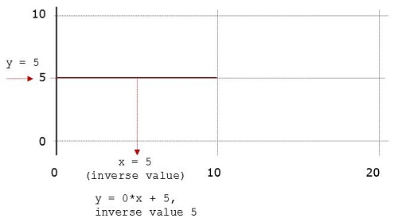
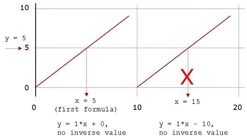

A list of linear formulas (factor, offset) , each restricted by Start and/or End Range.
Converts raw byte x using sections on the x-axis in which a linear formula phys = factor*raw + offset applies.
Special use-cases:
See also the dialog.
Example
| Raw value x in value range | Physical value |
|---|---|
| 0x00 - 0x80 | x + b |
| 0x81 - 0xFF | -x + b ("sign bit") |
The CANdela data model stores raw Start/End values only, not the physical ones which may be computed using the linear formula.

Raw Value from Inverse Value for Formula with Factor 0
For each linear formula with factor 0, you can optionally specify an inverse value.
x values have the same constant physical y valuex value to use when the given physical y value must be converted to a raw value.Note: it is even possible to specify an inverse value that is not in the raw range of the formula.
Note: as of 2016, Vector test systems (e.g. CANalyzer 9.0) support the inverse value for text tables only.
In the computation of a raw x value, ambiguities are resolved...
y value: by using the first matching formula, in the order of their definition in the piecewise linear data type.
Raw Value from First Formula
Example:
| Range | Formula |
|---|---|
| 0..9 | y = 1*x + 0 |
| 10..19 | y = 1*x - 10 |
Both x = 5 and x = 15 produce y = 5.
Computing x for y =5 results in x = 5 (not 15).